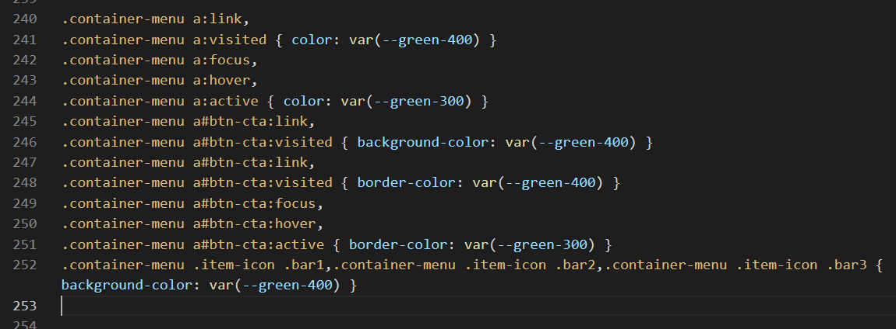
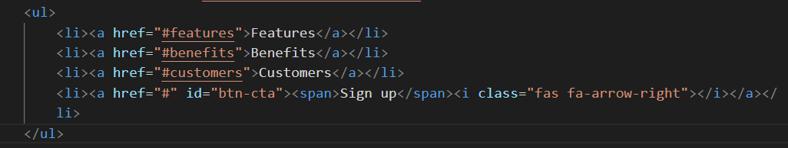

Overview of navigation menubars
On desktop/laptop screens, the main navigation menu is commonly a horizontal bar that stretches left-to-right across the top of the screen. It is commonly called a menubar or navbar. Typically:
- The logo is positioned at the left.
- Various menu options are positioned at the right.
- One menu option – named the Call-To-Action (CTA) – is usually highlighted by being styled as a button.
In terms of visual appearance, navigation menus can be regarded as of three main types:
- Light background, dark text: Black or other dark-coloured text is displayed against a white or other light-coloured background.

- Dark background, light text: White or other light-coloured text is displayed against a black or other dark-coloured background.

- Transparent background: In this case, the background image appears directly behind the text of the menu options. The text may be dark or light – what is important is that the text is readable against the colours in background image.

Exercise folders and files
Your first task to obtain and open the files your need for this exercise.
- Download the following ZIP file to your 📁 exercises sub-folder. menus.zip.
- Unzip the file. It will create a new sub-folder named 📁 menus inside your 📁 exercises folder.
- With your web browser, display the index.html web page inside the new 📁 menus folder.
- Next, with VS Code, open the same index.html file.
- Finally, with VS Code, open the assets/css/custom.css stylesheet inside the new 📁 menus folder.
UK-Kit files
For your desktop and mobile menus to work, you will ned the following two files for the UI-Kit web page buidler.
- The lunadoge.css stylesheet file. This should be in your 'main' 📁 assets/css sub-folder.
- The menu.js JavaScript file. This should be in your 'main' 📁 assets/js sub-folder.
That's it. You now have all the resources you need.
Creating a basic web page menu
Here are the steps.
- In your web browser, open the UI-Kit.
- Near the end of the list of layout options, choose the Menu option.
- On the Main Options menu, set the Hyperlinks colours.
- For Passive Hyperlinks, choose the fourth Green.

- For Passive Hyperlinks, choose the third Green.

- For Passive Hyperlinks, choose the fourth Green.
- Next, also the Main Options menu, set the CTA BUTTON colours.
- For Passive Background, choose the fourth Green.
- For Passive Border, also choose the fourth Green.
- For Active Background, choose the third Green.
- For Active Border, choose the third Green.
- Finally, choose the Mobile Menu option and set the Hamburger Icon colour to the fourth Green.
- Use the Copy HTML button to copy-and-paste the new menu in the index.html web page, just after the opening <body> tag

- Use the Copy CSS buttons to copy-and-paste your style rules at the end of the custom.css stylesheet. 
- In the menu you pasted into the index.html web page, edit the hyperlinks and the hyperlink text as follows. 
Your web page with the new menu should now look similar to that below. Verify that the menu displays correctly on a mobile-sized screen.

Uploading your files to GitHub
After finishing your updates, you are now ready to upload your files to your account on GitHub.
- Open a new tab in your web browser and go to GitHub.com. If you are not already signed in to your GitHub account, sign in now.

- On your GitHub home page, click the ‘repo’ that holds your web pages. Its name will look as follows, where username is your chosen username on GitHub.
username.github.io

- On the next GitHub screen displayed, near the right of the screen, you can see a button named Add file. Click on it.

- From the dropdown list displayed, choose the option Upload files.

- In File Explorer (Windows 10) or Finder (Apple Mac), drag-and-drop your 📁 exercises folder to upload it to your repository on GitHub.
- Scroll down to the bottom of the GitHub screen, and accept or edit the short message (Add files via upload) in the Commit changes box.
- Finally, click the green Commit changes button to upload your files.

Your portfolio web pages are now published on GitHub at web addresses similar to the following:
https://username.github.io/exercises/menus/index.html
It may take a few minutes for your uploaded files to appear on GitHub.